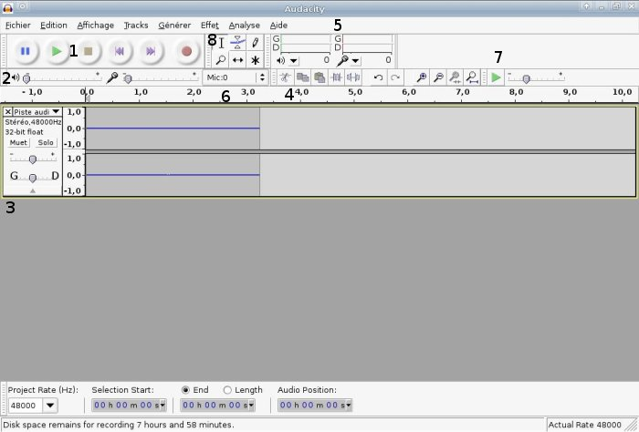
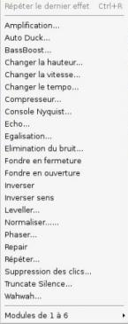
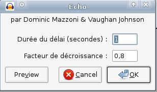
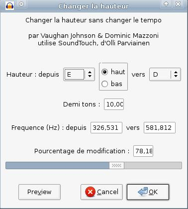
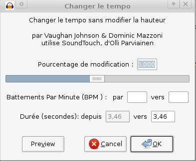

Nous allons, dans ce tuto, apprendre à nous servir du logiciel Audacity, à le prendre en main. Audacity est un éditeur audio libre et gratuit multi-plates-formes (notamment disponible sous Windows, GNU/Linux et Mac). Il va entre autres nous permettre d'enregistrer un son en direct et de l'exporter en .mp3, de "monter" plusieurs sons à la suite ou encore d'enregistrer jusqu'à 16 pistes simultanément. Il est aussi possible d'ajouter des effets au son et même d'en télécharger de nouveaux.
Avant d'installer Audacity, je vais vous faire une rapide présentation et un petit historique du logiciel. Je vous en ai cité quelques fonctionnalités dans l'introduction, mais si vous voulez en avoir la liste complète, je vous invite à visiter cette page.
Né à l'initiative de Domini Mazzoni et Roger Dannenberg, Audacity existe depuis 1999. Diffusé sous licence libre depuis mai 2000, il est toujours en développement. Le logiciel ne risque donc pas de "mourir" : étant plutôt facile à prendre en main, il va devenir un de vos programmes favoris ! :euh:
Téléchargement et installation
Qu'est-ce que LAME ?
Comme le logiciel est multi-plates-formes, nous allons voir les différentes manières de l'installer sous les trois principaux systèmes d'exploitation.
Commençons par GNU/Linux : dans Synaptic ou tout autre gestionnaire de paquets, faites une recherche avec le mot-clé : Audacity. Sélectionnez le paquet, faites ensuite une recherche avec le mot-clé liblame. Enfin, installez le tout.
Maintenant, intéressons-nous à Windows : téléchargez l'exécutable à cette adresse et faites Suivant, Suivant, Suivant et ok. :D Revenez sur la page de téléchargement, descendez un peu, téléchargez l'Encodeur MP3 LAME et installez-le.
Enfin, pour Mac, tout ce qu'il vous faut se trouve ici : Page de téléchargement ; téléchargez Audacity et l'encodeur LAME.
On va maintenant passer en revue les différents éléments de la fenêtre d'Audacity.

Les outils qui correspondent aux numéros sont les suivants :
les différents boutons principaux (lecture, stop, pause, enregistrer...) ;
le niveau du son en entrée (micro...) et en sortie (au niveau des hauts parleurs) ;
une piste audio ;
au-dessus, quelques outils (copier, coller, couper...) ;
quand on joue ou quand on enregistre un son, on voit le niveau d'entrée et de sortie au moyen de barres de couleurs différentes ;
dans cette liste, on peut choisir le périphérique d'entrée (CD, micro...) ;
possibilité de jouer la bande à des vitesses différentes.
Voilà : on a vu les principaux boutons. Vous pouvez remarquer la présence du menu Effets, qui propose des effets tels que Phaser (une sorte de "vague" dans le son), echo (aussi appelé Delay en guitare) ou Wah-Wah (le son fait Wah-Wah :waw: ). Nous aborderons les effets dans une partie ultérieure.
On va maintenant enregistrer un son. L'avantage d'Audacity est que vous pouvez choisir l'entrée que vous voulez.
Avec un micro
On va faire un enregistrement avec un micro, ou avec tout autre périphérique audio branché sur le jack de la prise micro de votre ordinateur. Vous devez sélectionner le périphérique d'entrée mic, comme ceci :
Cette liste se trouve en haut de l'écran (le numéro 6 dans la présentation de la fenêtre ci-dessus).
Ensuite, tout simplement, quand vous voulez commencer l'enregistrement, vous cliquez sur le bouton rond rouge. Pour finir l'enregistrement, il suffit de cliquer sur le carré jaune (Stop). Nous verrons les différentes possibilités d'enregistrer / exporter notre son.
Enregistrer le son qui sort de vos hauts-parleurs
Vous voulez enregistrer le son qui sort de vos hauts-parleurs, que ce soit la radio, le discours de votre homme / femme politique préféré(e) ou une chanson ? Vous êtes au bon endroit ! :)
On va changer l'entrée audio, on va mettre sur mix :
Ensuite, vous lancez la lecture de ce que vous voulez enregistrer (la radio, par exemple) et vous attendez la fin (des fois, c'est long :p , c'est le seul inconvénient). Quand c'est fini, on appuie sur le bouton Stop (le carré jaune).
Sur votre version, vous n'avez plus la liste déroulante permettant de sélectionner l'entrée son
Pour Linux : nous allons éditer les préférences d'Audacity pour mettre la carte son comme périphérique d'enregistrement. La procédure à suivre est la suivante : allez dans le menu Édition, ensuite dans Préférences et sélectionnez votre carte son (en rouge sur le screenshot) :
Sous Windows XP, la procédure n'est pas la même, je remercie Dark Patate pour m'avoir dit comment faire :
Citation : Dark Patate
Aller dans Panneau de configuration
Puis dans Voix (en affichage classique)
Dans l'onglet Reconnaissance Vocale
Dans le cadre Microphone cliquer sur Entrée audio
Sélectionner : Utiliser ce périphérique d'entrée audio
Sélectionner Line in/Mic in dans la liste déroulante
Puis cliquer sur Propriété
Choisissez l'option : Utiliser cette ligne d'entrée audio
Et enfin dans la liste déroulante, sélectionner : Mixage Stéréo
Ensuite il suffit de valider le tout et c'est bon ! ;)
Enregistrement multi-pistes
Pour différentes raisons, on peut vouloir faire un enregistrement multi-pistes. Mais, qu'est-ce que c'est ?
Dans un enregistrement de ce type-là, on va superposer plusieurs pistes audio. On peut ensuite modifier chaque piste : monter ou baisser le volume ou encore appliquer un effet à une piste en particulier. Si vous jouez en groupe, cela vous permet d'enregistrer un instrument puis un autre et enfin, de superposer la voix. L'avantage, c'est qu'on n'est pas obligé d'enregistrer en même temps : on enregistre la première piste, puis on relance l'enregistrement pour la deuxième piste et on obtient un enregistrement à deux pistes.
Exporter et enregistrer notre bande son
Comme nous avons téléchargé LAME, on peut exporter notre piste (nos pistes) en .mp3.
Voici la procédure à suivre :
dans le menu Fichier > Exporter, choisir le format .mp3 dans la fenêtre d'enregistrement (celle dans laquelle on donne le nom du fichier) ;
si vous avez de la chance :D une fenêtre d'édition des tags du fichier .mp3 va apparaître ; vous pouvez renseigner le nom de l'artiste, l'album, l'année, le genre...
Avec un fichier multi-pistes
Il est possible d'exporter un fichier multi-pistes dans plusieurs fichiers .mp3 différents.
Pour cela :
Fichier > Exporter multiple ;
la fenêtre d'édition des tags va apparaître ;
les pistes seront mises dans des fichiers différents.
Enregistrer un projet Audacity
Il existe une autre méthode pour sauvegarder vos créations et vos enregistrements : faire un projet. L'avantage d'enregistrer vos créations dans un projet, c'est qu'après, si vous voulez retravailler dessus c'est très facile ! Vous retrouverez un écran avec les pistes, comme ceci :
Pour sélectionner une partie d'une piste, il faut avoir le curseur de cette forme :
S'il apparaît différemment, vous devez le sélectionner (cf. n°8 dans la partie sur la fenêtre). Ensuite, la sélection se fait comme d'habitude, en maintenant le clic appuyé et en glissant sur la partie à sélectionner.
Les effets
Je vous l'ai dit au début du tutoriel et vous avez pu le constater vous-mêmes, il existe un menu Effets :

On va tester quelques effets sur un extrait (prenez ce que vous voulez). En l'occurrence les plus impressionnants, tels que l'écho (Delay), ou Changer la hauteur ou le tempo.
Ajouter de l'écho
Si vous êtes guitaristes, vous connaissez sûrement cet effet très utilisé dans le rock, sous le nom de Delay.
Ici aussi, il faut sélectionner la partie sur laquelle vous voulez appliquer l'effet et cliquer sur écho dans le menu Effets.
Voici la fenêtre qui va s'afficher :

Sur cette fenêtre, on a deux champs. Le premier, Durée du délai, permet de paramétrer la durée pendant laquelle on va entendre l'écho. Le second, Facteur de décroissance, permet de paramétrer la baisse du volume du son quand il est répété.
Changer la hauteur ou le tempo
Voici la fenêtre qui s'ouvre lorsqu'on clique sur l'effet changer la hauteur.

Ici, on va changer la hauteur de la bande audio (c'est-à-dire la rendre plus aiguë ou plus grave). La hauteur est déterminée par les notes en notation anglo-saxonne (désolé pour les non-musiciens, ils risquent de ne pas comprendre). Si vous voulez rendre votre bande son plus aiguë, cochez la case haut ; pour l'effet contraire, cochez la case bas.
Je conseille aux non-musiciens de faire des tests pour voir comment le logiciel se comporte : en soi, ce n'est pas très compliqué !
On peut aussi changer le tempo (ou la vitesse de la musique, exprimée en battements ou pulsations par minute).
Vous pouvez donc modifier la durée de la sélection : l'accélérer ou la ralentir avec la barre des "pourcentages", ou avec le tempo (en battements par minute).

Après, vous pouvez tester tous les autres effets pour voir le résultat sur votre bande son. Ça peut être amusant mais il y a du boulot ! :lol:
Hé oui ! :diable: Mais vous pouvez vous rendre dans la rubrique correspondant à votre OS et télécharger de nouveaux effets ! :)
Les marqueurs
Les marqueurs, c'est bien utile. Ça va nous permettre de sélectionner une zone prédéfinie en un seul clic.
Sur la capture 1 : on voit trois zones : Intro - Refrain - Couplet. Si je clique sur un de ces mots, la zone qui se trouve au-dessus sera alors automatiquement sélectionnée (2). Pour ajouter un marqueur, sélectionnez la zone sur laquelle vous voulez mettre le marqueur et faites Ctrl + B. Vous entrez le nom et vous avez ainsi un nouveau marqueur. Vous avez peut-être remarqué la présence de poignées sur les bords du marqueur : on peut les faire glisser pour agrandir ou réduire sa taille (3).
Le dernier lien date un peu, mais le tuto est toujours d'actualité.
C'est ici que s'achève ce tutoriel sur Audacity. Après cette lecture, vous ne serez pas des dieux d'Audacity mais vous pouvez déjà vous amuser. On va dire que le logiciel est pris en main. :-°
{kind=link}
{kind=link}
{kind=link}
{kind=link}
{kind=link}
{kind=link}
{kind=link}
{kind=link}